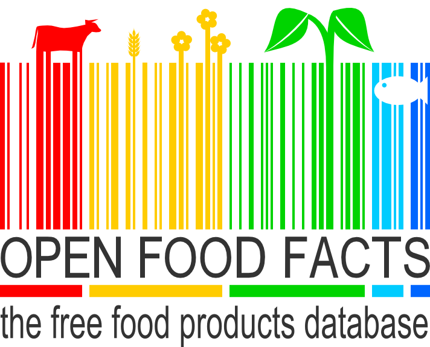
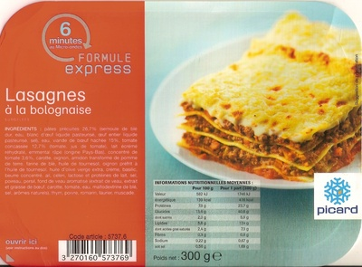
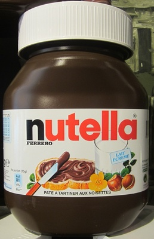
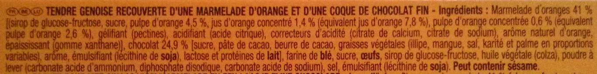
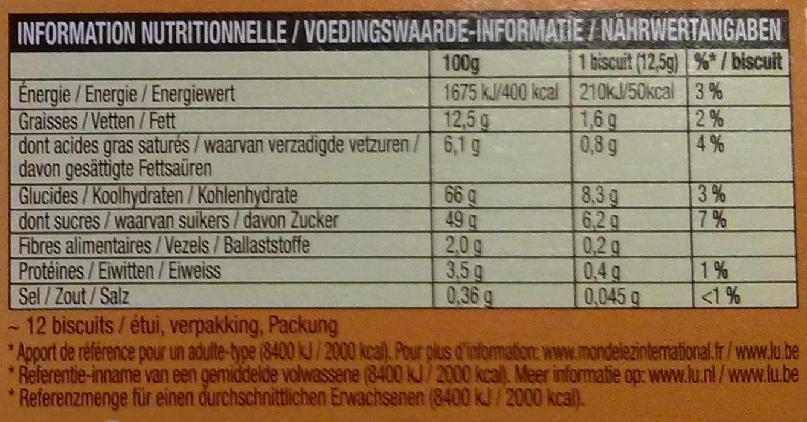
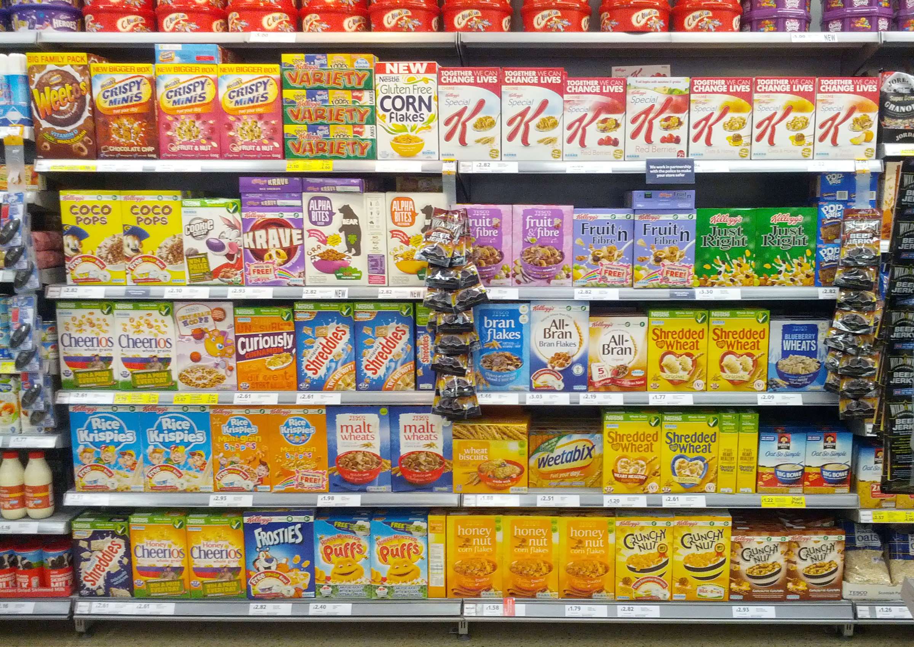
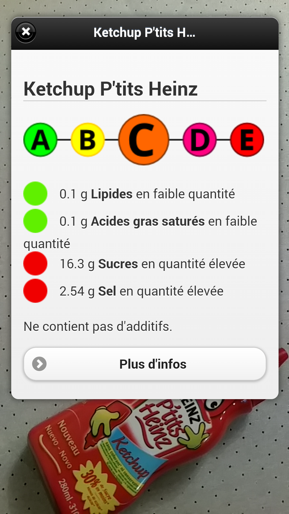
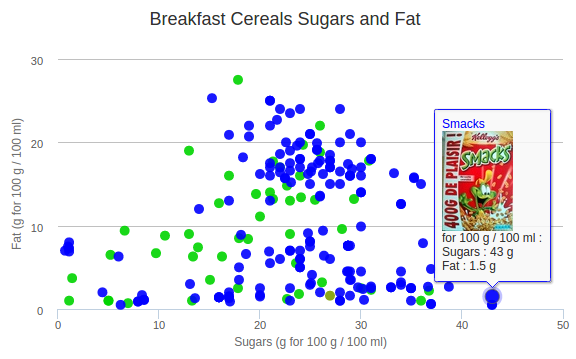
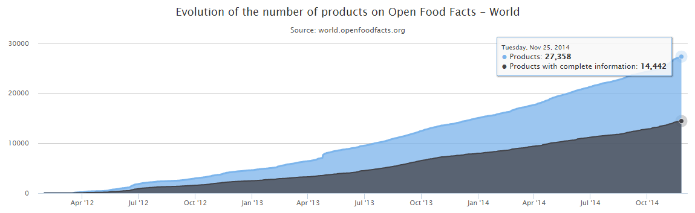
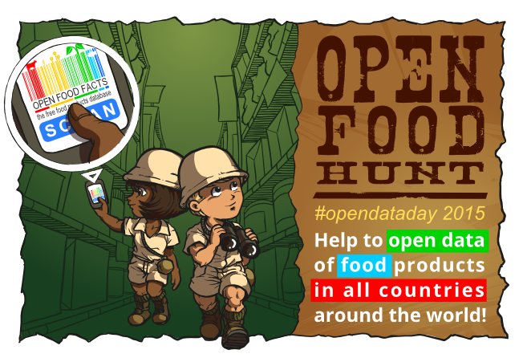

slides: http://bu.gs/ofh15
Open?
For consumers, the food industry is a black box
Beef

Vegetable oil

Origin

Data?
A lot of useful data available...
... if you read the fine print...
... all the fine print
... on all products
Open?
Can we open the data on food products ourselves?

An Open and Collaborative Database
Crowdsourcing with mobile apps

(FirefoxOS in the making)

Crowsourcing from the web
Meaningful data
decrypting labels
decrypting labels
Additives
Additives
Allergens
Palm Oil
Nutrition traffic lights
Ingredients Translator
And more ...
From the app
From the web
Interactive graphs world.openfoodfacts.org/cgi/search.pl
Open Food Facts
In numbers
Launch on May 19th 2012
Incorporated as non-profit on April 11th 2014
1500 contributors
33000 products (23000 from France)
27500 ingredients
312 additives
Open Food Facts
In a graph
Open Food Facts
In a map

Re-uses
Not public data but data of public interest
Re-uses
Open data:
Re-uses
Full database export in CSV, RDF, MongoDB dump
Re-uses
JSON API
Re-uses
More info: world.openfoodfacts.org/data
Re-uses
Open Food Facts data + OpenStreetMap map
Re-uses
Educative game
Englih: howmuchsugar.in French: combiendesucres.fr
Open Food Hunt 2015
Open Food Hunt 2015
Goals
Add food products in all 250 countries
Reach a critical mass of products in as many countries as possible
Start or develop local contributors communities
Open Food Hunt 2015
Food Explorers who add products
Food Ambassadors who recruit new contributors
Friendly competition with points,rankings and rewards for participants
Contact
- contact@openfoodfacts.org
- Twitter: @OpenFoodFacts
- Facebook: facebook.com/OpenFoodFacts
- Wiki: en.wiki.openfoodfacts.org
We use extensively a tool called Slack to communicate between contributors, developers and reusers. Please e-mail contact@openfoodfacts.org to join!